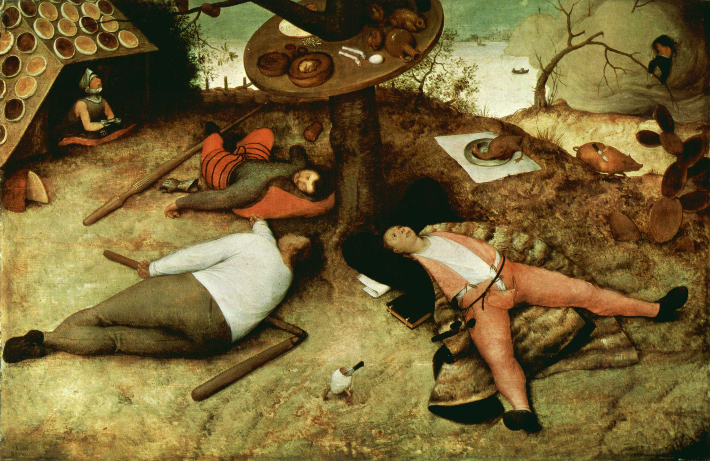

← חזרה
15-16/08/2025
Start with a calllmmm and quieeeet mindd (יש לקרוא בקול הודי נעים ביותר, איטי, ההודי שמנמן)
בקורס ויפאסנה שהייתי בעשרה ימים האחרונים, עם משפט זה התחלנו את המדיטציה.
מדיטציה, עוד מילה שהייתה לי סלידה נוראית ממנה, אבל זה עבר..
נפש שקטה ורגוע - איך בכלל מגיעים למצב כזה ? במרכז בדגניה ב ליד הכנרת, כשאין שום הסחות דעת ועובדים לפי הטכניקה כמה ימים, זה יכול להיות די קל. מתרכזים בנשימות. אף אחד לא פגע בך לאחרונה, לא נחשפת לשום דבר שלילי. היית עם עצמך - זה דבר קשה ומסעיר מאוד אבל מלמדים אותך שם להגיע למצב הזה די בקלות. לשמור עליו במשך המדיטציה זה סיפור אחר לגמרי. לשמור אחרי הקורס, עוד יותר…
למה הלכתי לקורס ? יובל נוח הררי, ספרו ההיסטוריה של המחר (ספר מדהים שלא אדבר עליו עכשיו, רק אציין שמירקתי חצי ממנו בתוך התלהבות מהרעיונות, והוא לא מדבר שם על תודעה וויפאסנה מלבד בכמה עמודים האחרונים) מוקדש למורו ומורי - גואנקה. רציתי לחדד את הריכוז שלי, דקארט מדבר זריזות המחשבה ככלי אחד מתוך שלושה שהוא מכיר לשיפור שכלי הדל - יש קשר בין השניים. בנוסף רציתי להבין מה זה תודעה (אחד התחומים המעניינים אותי ביותר), ללמוד מההודים החכמים שחקרו והבינו וניסחו(! מצריך הבנה ברמה גבוהה, בניית איזה סיסטמה של חלקים שמתחברים אחד לשני בקוהרנטיות. מבוססים על כמה הנחות יסוד ועובדים לפי שיטת חקירה מסוימת. מגיעים להיגיון מסוים) את התחום במשך מאות או אלפי שנים. אז קראתי ספר טוב מאדם שאני תופס ממנו ומתחבר אליו והוא דיבר שם על משהו שעזר לו להפיק דברים מדהימים. ״חבר המליץ לי״ - יכול להיות תיאור טוב של למה הלכתי. לקח לי איזה שנתיים אבל ״מצאתי זמן טוב״ והגעתי.
הגעתי למרכז בצהריי יום שני ראיתי שני בחורים צעירים בדלת ונכנסתי, נרשמתי, הבחור שרשם אותי אמר שיש אנשים שפורשים ביום ה2 וה6 לרוב. בנוסף סיפר שהשיטה עזרה לו בחיים, גם אמא שלו הלכה לקורס והדבר היחיד שהחזיק אותה זה השיחות בערב - הזמן היחיד שלא מתרגלים מדיטציה ושומעים קצת תיאוריה. זאת על מנת שנתרגל בצורה טובה, נבין את המטרה של מה שאנחנו עושים ונדע באיזה כיוון הולכים, נרגיש בטוחים ללכת בדרך זו אם נבחר בה ולא נפחד או נתעה בדרך.
קיבלתי חדר יחד עם שני הבחורים מההתחלה. לראשון נקרא הבחור עם הגב העצום, בחור מעצבן וסנוב. השני, החבר, לא החבר של גב עצום, חבר שלי - בחור חברתי ונחמד.
אתה מוזמן לקרוא על הקורס באתר של ויפאסנה ישראל לי אין כח להסביר אז רק אגיד בשני מילים - לא עושים כלום חוץ מתרגול מדיטציה.
כמו בחיים, גם שם יש ימים טובים וימים רעים, מה שמנסים ללמד בשיטה זה איזון נפשי, קבלה של המציאות כמו שהיא זה התרגום הישיר של המילה ויפאסנה. הסבל שהזבוב גורם לנו לא נובע מהרעש שלו או ההרגשה על הגוף אלא הרצון שלנו להזיז אותו, רק בתוכנו. אני התאמנתי קצת עם זבובים וזה היה נהדר, החזקתי בכיף איזה דקה.
ברגע שתהיה מאוזן לא תהיה מאושר מדי ביום טוב, ככה גם לא תחייל ליום טוב כל יום ותהיה מאוזן ביום הרע, וזה רק טבעי שיגיע. הם אומרים זה חוק טבע, אניצה - הכל רגעי.
יום 2 - גב עצום עוזב, ברוך שפטרנו. הימים הראשונים מאוד קשים, רק מתחילים לעבוד, מאוד מובלבלים ולא מצליחים להתרכז ולתרגל כמו שצריך. זה גורם לך להרגיש לא טוב עם עצמך, זה חלק גדול מזה - ללמוד להתמודד ולהיות רגוע למרות התחושות האלה.
יום 4 - שיחת דאהמה נהדרת, התקדמות. ירח מלא.
יום 5 - שיחת דאהמה טובה עוד יותר. ליקוי ירח לדעתי, אה לא - הוא סתם היה אדום כי היה נמוך באופק.
יום 6 - החבר עוזב, אני נשאר לבד בחדר. יש לי חיוך עם הפנים אבל הרגשה מוזרה. בלילה מפחיד ופחות מרגיש בטוח.
יום 7 - קמתי מחלום רע עם כאב בטן נוראי. אבל את האמת שזה עבר די מהר והמשך היום היה טוב.
יום 8 - נפל לי אסימון - להסתכל על תחושות ולא על מחשבות, ואו זה לקח זמן.
יום 10 - בלי תחושות בבוקר, צריך להישאר רגוע, פחד חברתי מהיציאה משתיקה נאצלת. כמובן שבסוף היה אחלה, ישר התחברתי לכמה אנשים נהדרים, דיברתי על דברים שמעניינים אותי, שאלות על דהאמה, פילוסופיה של החינוך (נדבר גם אנחנו), סמים, שיטות מדיטציה אחרות, סמים, ואפילו קיבלתי מחמאות על השאלות שלי משני מתנדבים במרכז.
פילוסופים של הגוף והנפש אמרו הרבה דברים מעניינים, אבל ברמה האינטלקטואלית בלבד, גונקה שומר את זה במישור החוויתי, זה כל מה שהם מנסים להגיד שם - עזוב את השטויות ואת הספרים. אתה פה. תן ניסיון לשיטה שלנו בדרך מעשית, ככה תלמד באמת, על עצמך, אל תסמוך על בודהא אמונה עיוורת.
בנוסף לא יודע מה גונקה יגיד לגבי הטיפול הפסיכולוגי אבל לא נראה שהשניים הולכים יחד.
ויפאסנה של גונקה - על מנת להגיע לאיזון נפשי צריך להבין שהכל רגעי ובכך להתרחק מסבל - שנגרם בגלל השתוקקות וסלידה מדברים חיצוניים (יותר נכון מהתחושות שלנו) שנובעות מ6 דלתות החושים - מגע, ראייה, שמיעה, הרחה, טעם וחשיבה. המחשבה גם כן גורמת לתחושות בגוף וזו עובדה שמאוד קל להבין אותה בעזרת התנסות.
ההכרה מורכבת מ4 חלקים: גירוי, אנחנו מזהים אותו, דבר שמזהים מתרגם לתחושה, התחושה גורמת לתגובה. המילה סנקרה היא התניה, תגובה מותנית, הרגל כזה. בתרגול ויפאסנה אנחנו מנסים להיפטר מסנקרות ישנות, משקעים נפשיים שגורמים לנו להגיב לגירוי מסוים באופן מסוים וקבוע. במקום זה אפשר להיות מודע ולהיות משוחרר מהסנקרות האלה. לבחור את התגובה. והדרך - לאמן את החלק האחד שנגיש לנו והוא ההכרה, התחושות.
מה זה השתוקקות, האם מותר להיות בעל שאיפות ותשוקות ? צריך להימנע מיצר ?
יצר נגד תשוקה - לשמוע וליצור מוזיקה - אני מניח שזה בסדר, בגלל שגונקה בעצמו משורר ושר.
״השתוקקות - המוח מפתח תלות בדבר חיצוני בשביל להיות רגוע, וזה דבר שלילי.
שאיפה מודעת וחופשית - אתה פועל להשיג מטרה, מקבל בשלווה את ההתקדמות
השתוקקות כפייתית - מצב בו האושר שלך תלוי במימוש המטרה, ואתה סובל כשהיא לא מתממשת
לא מדובר בדיכוי יצר או חיסול רגשות. הדרך היא: להכיר ביצר כשהוא עולה, לשים לב לתחושות בגוף שהוא מייצר, לבחור אם וכיצד לפעול, במקום לפעול בצורה אוטומטית״ (chatgpt)
לי כל הסיפור הזה ממש מזכיר את הTrust the Process או ביטוי ששמעתי אז שממש אהבתי - חירות = משמעת. ההבדל הוא שבמערב הגישה היא: הנה, זה המידע, תעשה איתו מה שאתה רוצה. ובויפאסנה הדגש הוא ממש לא על האינטלקט, בדיוק הפוך - לא אומרים לך ביטויים יפים או מציגים פילוסופיות מסובכות (את האמת שכן מציגים ומספרים סיפורי מעשיות של בודהא, אבל זה ממש לא העיקר), העיקר הוא בפרקטיקה: הנה, זו השיטה. תתנסה. תגלה בעצמך. תבין מה נכון ומה לא נכון לפי החוויה. הדגש הוא במישור החוויתי ולא בשכלי בלבד.
כמו שדיברנו בעבר על מטרות זה הרבה יותר טוב מהשתוקקות לסיפוק רגעי. אתה רוצה את הסיפוק שוב ושוב ואף פעם לא באמת מרוצה, גם אם השגת את הרכב שרצית עכשיו רוצה את הבית הזה… כשיש מטרות מסוג זה שאני מדבר עליהן אני חושב שמקבלים תחושה של סיפוק לאורך התהליך - וזה דבר נפלא וחיובי. חשבתי על הדברים האלה גם לפני ויפאסנה ואני מרגיש שמח בגלל זה, מחזק לי את האגו קצת לדעת שלא הייתי בור ואידיוט בתחום הנפש ועכשיו התורה כולה מגיע אלי ואני לומד הכל חדש יפה. אלא יותר כמו - עד עכשיו הייתי כמו חוקר עצמאי שלומד לבד, או יותר נכון היו לי כלים מסוימים וידע שקיבלתי מהעולם המערבי, עכשיו קיבלתי שיטה חדשה, מעניינת, נראה שיש בה משהו ואני יותר מעוניין להעמיק בה. התורה הזו, יש ללמוד אותה, אבל נראה שהקריאה מהספר לא תעזור הרבה בהתקדמות בשיטה הזו, הדבר החשוב הוא למדוט, להרגיש.
בתחום המדע, בעבר היה לי פחד שאם אשמע רעיונות של אחרים, אם אקרא את החומר הקיים המוח שלי יתקבע ואשאר בשיטה המסורתית, לא אצליח להיות יצירתי והשתחרר מדפוסי המחשבה שלימדו אותי. פילוסופיה ופילוסופיה של המדע סיפקו מזור נהדר לחדרה הזו מכיוון שנתנו לי את מתנת הביקורתיות. איש מדע שלא מכיר פילוסופיה של המדע, החוקרת את השיטה המדעית עצמה, מטילה בה ספק ומנסה למצוא בה פגמים. דוגמא - חשוב מאוד להכיר שהמדע לוקח כמובן מאליו שלכל דבר עולם יש סיבה. סיבה ותוצאה - זו אחת העקרונות הבסיסיים במדע שלנו, ואם לא נחשוב חשיבה טהורה, פילוסופית, לא נהיה מודעים לדפוס המחשבה הזה ובלי מודעות אי אפשר להשתחרר ממחלה.
תרופה זו, מתנת הביקורתיות, מוכלת בקלות ובלי משים גם על המחקר הזה. זה לא מחקר מדעי בשום דרך שאני מכיר. למידה דרך חוויה, לא דרך חשיבה או ספרים, אני חוויתי ולמדתי וחשבתי ובנוסף כמובן, גם קראתי דברים שאנשים אחרים חשבו עליהם וחקרו בשיטה המדעית אבל לא הייתי חשוף לתורת הדהאמה - במשך מאות או אלפי שנים אנשים (אנשי המזרח, אנשי המערב התעסקו בדברים חשובים אחרים) חקרו ופיתחו שיטות לחקר התודעה. לטיהור וריפוי הנפש ממשקעים.
ביום 0 בקורס אנו מקבלים עלינו את חוקי המוסר של השיטה - סילה - אסור לשקר, לגנוב, להרוג יצור חי ועוד… וגם מקבלים על עצמנו חוקי פרישות מסוימים - אין טלפון, דף, עט, ספר, חליל, אסור להתאמן בכלל, יש הפרדה בין גברים לנשים, אסור ליצור קשר עם אף תלמיד, שום סוג של קשר או מחווה ואסור כלום בקיצור רק מתרגלים, מתרכזים רק בשיטה. אבל פרישות זו היא לא הכל פה, זה לא ריטריט. זה רק נקודה אחת קטנה שמאפשרת להשיג כל-כך הרבה יותר. המטרה של הפרישות היא להתרכז במדיטציה וממש לא המטרה בפני עצמה - זו התחושה שהמילה ריטריט נותנת לי, לכן היא לא מוצאת חן באוזניי.
ביום 0 לומדים גם שיטת מדיטציה ראשונה - אנפאנה - מטרתה לחדד את הריכוז שלנו (סמאהדי), לשלוט בתודעה ולא שהיא תשלוט בנו ותעבור ממחשבה למחשבה בלי משים, כמו שקורה לרובנו רוב הזמן.
ביום 4 לומדים שיטת מדיטציה שנייה - ויפאסנה - השיטה המרכזית. בעזרתה נרכוש פאניה - חוכמה. מכירים את תחושות בגוף בעזרת סריקה שלו. דוגמא, מתרכזים באזור מסוים בגב ומרגישים את הכאב.
ביום 9 לומדים שיטת מדיטציה שלישית - מטא - החלק היחיד שהוא שטיפת מוח, ושטיפת מוח ושלדעתי היא חיובית ובנתיים אקבל אותה - שטיפת מוח לאהבת חינם. תחילה לאהבת עצמך, אחר כך לאחרים (לפי סדר): משפחה וחברים קרובים, אנשים רחוקים, אנשים זרים, אנשים שנואים. לפתח אהבה וחמלה עבור כל יצור חי. אחד המכשולים הרציניים שהיו לי היו פחד משטיפת מוח. כמו שאמרתי קודם, אני שמח ומעוניין ללמוד מאנשים חכמים מעבר, שעבדו יחד במשך דורות ופיתחו שיטות מורכבות לחקור את התודעה, אבל כמו בכל דבר לא מוכר - יש חשש. היה לי חשש שאני מגיע לאיזה מקום, איזה כת, שמטרתה לשטוף לי את המוח. בארוחת ערב זרקתי את זה לאח שלי ששאל מה הולכים לעשות שם - עניתי ״לשטוף לי את המוח״. אומרים שבכל צחוק יש שמץ אמת. אני סמכתי על עצמי, לא חושב שיכולים לעבוד עלי כל-כך בקלות. אבל להיות alert לוקח הרבה כוחות נפשיים. לאורך הימים אני החשש התפוגג, הבנתי שהגעתי למקום טוב.
בכל שיטת חינוך שאני מכיר יש שטיפת מוח מסוימת בגלל שיש הנחות יסוד. בשיטה שאגסי מלמד בה נראה שאין, הוא מתחיל בללמד מה מלמדים, איך מלמדים ולמה, האם אנחנו רוצים ללמוד את זה בכלל ולמה, לוקח זמן עד שמגיעים ללמידה של מה שרצינו ללמוד בשיטה זו, אבל בפילוסופיה (מה שהוא מלמד) זו שיטה נהדרת וקוהרנטית. אם פילוסוף לא יעבוד בשיטה כזו הוא יכול לדבר על פילוסופיה אבל הוא לא חי אותה, הוא לא עובד איתה, לפחות לא מלמד בשיטה פילוסופית. יש לו פילוסופיה איזה מערכת, אבל אין למערכת קיום במערכת החינוך שלו.
ונדבר על פילוסופית החינוך של הויפאסנה - כל-כך מיושרת עם הערכים עליהם הם מדברים ומלמדים, זה מדהים לראות ולחוות. אם נשווה את זה לבית הספר שם מלמדים על חירות בזמן שאתה כלוא בכיסא בלי יכולת בחירה, אפשר לאמר שזה ההפך הגמור מקוהרנטיות בין שיטת החינוך (פילוסופיה של החינוך) לבין חומר הלימוד - זו פשוט צביעות. זה חומר לימוד והוא נשאר בתיאוריה, בספר.
מחשבות שעלו:
מחשבות על כתיבה הדברים שחוויתי ועברתי, חטא כפול וחוויה לא נעימה - סבל שאני מעוניין להיפטר ממנו. אסביר.
יש לי בעיה עם זיכרון + יש לי חוסר שלווה עם הבעיה הזו. אין שום בעיה. יש - הזיכרון של אוהד. אני יוצר את הבעיה בדרך שבה אני חושב על הדברים. זה בדיוק מה שמנסים ללמד שם.
כתיבה בחשיבה וכתיבה על העבר - דיברתי פה ברשומה קודמת על חוסר הנוחות שיש לי מתרגום או חזרה על דברים של אחרים. בנוסף יש לי חוסר נוחות מרצון להיזכר או לחשוב על העבר כשהמטרה של הפעולה היא זיכרון גרידא. חשיבה בכתיבה - זו הסיבה שאני רושם פה, זה להיות בהווה, לחשוב, להיות יצירתי, להבין דברים חדשים.
חלק גדול מהקורס היו לי מחשבות, ותמיד תהיה איזה מחשבה, על לכתוב (בעתיד) על מה שעברתי פה (בעבר). הבנתי לאורך הדרך שאני לא אוהב את המחשבות האלה, כי הן נובעות מהפחד לשכוח. הרצון לנצור את העבר. להחזיק חזק בדרך חשוב/מעניין שקרה/שמעתי/קראתי. המטרה היא להשתחרר מרצון זה.
הבעיה היא שצריך לשמור על איזון נפשי, על שלווה עם מחשבות אלו. צריך להבין שזה דחק שלא מוצא חן בעייני, אבל לא ליצור עוד לחץ, צריך להשלים איתו. אז איך נפטרים מהדפוס הלא רצוי הזה ? ויפאסנה אמורה לתת תשובה - מודעות.
עוד קשיים שעלו בדרך: סבלנות, מסירות. יכול להיות מאוד משעמם+קשה קוגניטיבית+פיזית לשבת כל-כך הרבה זמן לעשות את הפעולה הסיציפית של מיפוי תחושות בגוף. כמו שגואנקה אומר alert and attentive. Patient and persistent.
אני אומר את זה בקצרה וכאילו כלום אבל אלו דברים שקשה מאוד להתמודד איתם שם, ואני בטוח שהתמודדות זו בעשרה ימים אין לה השפעה גדולה. ההשפעה האמיתית אמורה להגיע עם הזמן, עם התרגול בבית ובהמשך החיים, לפי הבחירות שנעשה יום-יום.
דיברתי יותר מדי, נסיים עם ציור של פיטר ברויגל מהמאה ה16 הנקרא “ארץ קוקיין”. לא בדיוק בתרבות שלי, או יותר נכון אני עדיין לא אדם תרבותי במיוחד אבל השם אמור להיות משהו מוכר אני חושב. סלח לי אני לא מכיר ואתעלם מהקונטקסט הזה. בוא פשוט נתסכל על הציור

מה שאני רואה פה זה שלושה בחורים אומללים, הבולט מבניהם לבוש פרווה. הכד הנפול. התחושה שיש שלווה, במובן של - אין לחץ, אין חששות ולא צריך להגן על עצמך. זה לא המצב שאני מתאר כמצב טוב של אדם, וגם גואנקה - אדם מאושר זה אדם שעובד קשה. יש לו מטרות והוא עובד על מנת להשיגן, הוא עובר זמנים טובים וקשים ושומר על איזון נפשי. האנשים בתמונה - יש להם הכל, אבל הם לא רוצים כלום, אולי הם רצו הכל, והשיגו הכל, אבל זה לא הביא להם כלום. מה שהם רצו באמת היתה תחושה טובה, והם לא ידעו זו, רדפו אחר הנאות חיצוניות ורגעיות.
MAY ALL BEING BE HAPPY
ככה גואנקה מסיים כל ישיבה (לא באנגלית, אלא בפאלי).